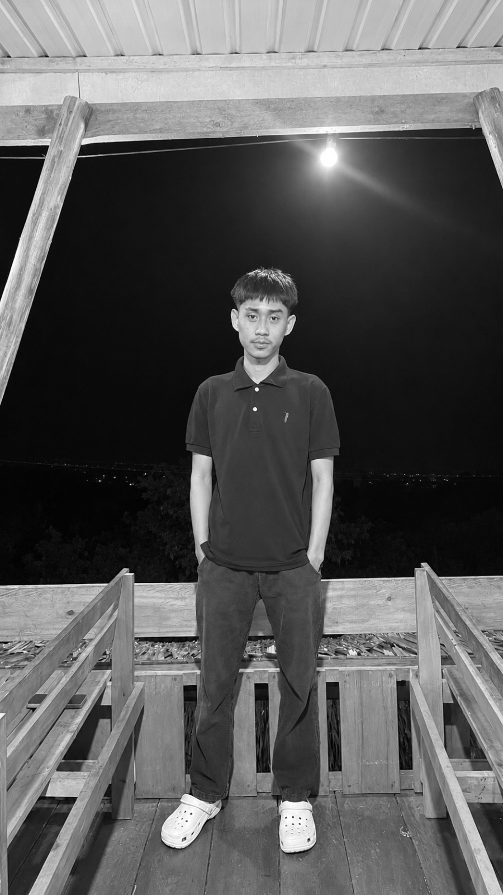

Web Development
HTML, CSS, JavaScript, serta dasar pengembangan aplikasi dengan Laravel.
Saya Nicky Hayden Batara, mahasiswa Teknik Informatika yang tertarik pada pengembangan web, desain antarmuka, dan teknologi digital yang bermanfaat.

Berangkat dari rasa ingin tahu, berkembang melalui proses, dan terus membangun kemampuan satu proyek demi satu proyek.
Mahasiswa Teknik Informatika
Universitas Cokroaminoto Palopo
Saya adalah mahasiswa Teknik Informatika di Universitas Cokroaminoto Palopo yang sedang memperdalam keterampilan di bidang teknologi dan pengembangan aplikasi.
Saya menikmati proses mengubah ide menjadi tampilan dan fitur yang mudah digunakan. Dalam setiap tugas dan proyek, saya berusaha memahami masalah, menyusun solusi, lalu mengembangkan hasilnya secara bertahap.
Portofolio ini merangkum perjalanan belajar, keterampilan, dan proyek yang sedang maupun telah saya kerjakan.
Bidang yang sedang saya kembangkan melalui latihan, perkuliahan, dan pengerjaan proyek.
HTML, CSS, JavaScript, serta dasar pengembangan aplikasi dengan Laravel.
Menyusun tata letak, hierarki visual, dan antarmuka yang jelas serta nyaman digunakan.
Melatih logika pemrograman, memecah masalah, dan melakukan pengujian fitur.
Contoh proyek yang bisa kamu tampilkan. Sesuaikan deskripsi dan teknologi dengan hasil proyek yang benar-benar kamu kerjakan.
Aplikasi web untuk mengelola data produk, gambar, stok, serta proses tambah, lihat, ubah, dan hapus data.
Konsep aplikasi untuk membantu pengguna mencari tempat kost, menyaring pilihan, dan menyimpan kost favorit.
Perjalanan pendidikan dan pembelajaran yang membentuk minat saya pada dunia teknologi.
Program Studi Teknik Informatika — mempelajari pemrograman, pengembangan web, dan konsep sistem informasi.
Mengasah keterampilan melalui tugas perkuliahan, eksperimen desain, dan pembangunan aplikasi.
Terbuka untuk diskusi, kolaborasi, dan kesempatan belajar bersama.